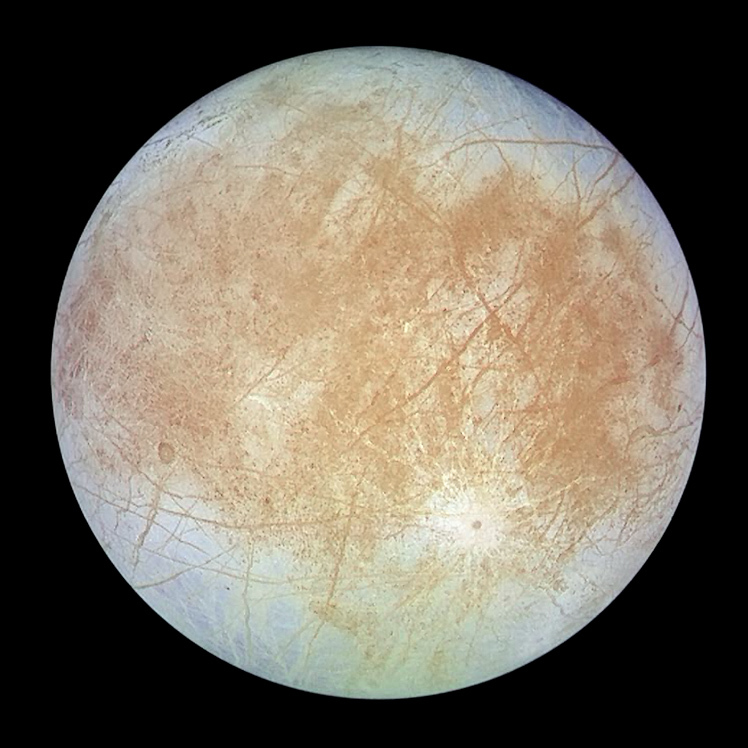
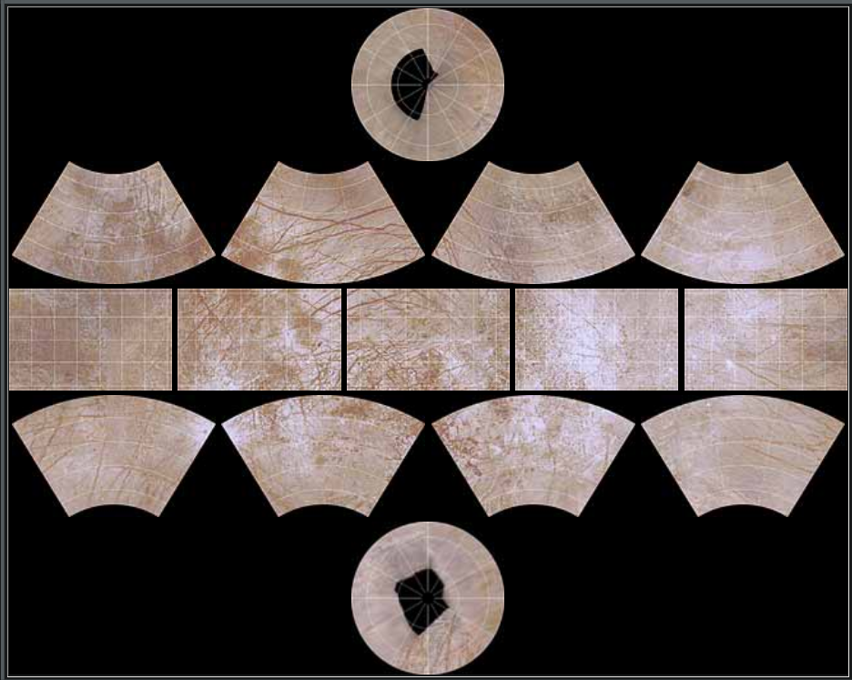
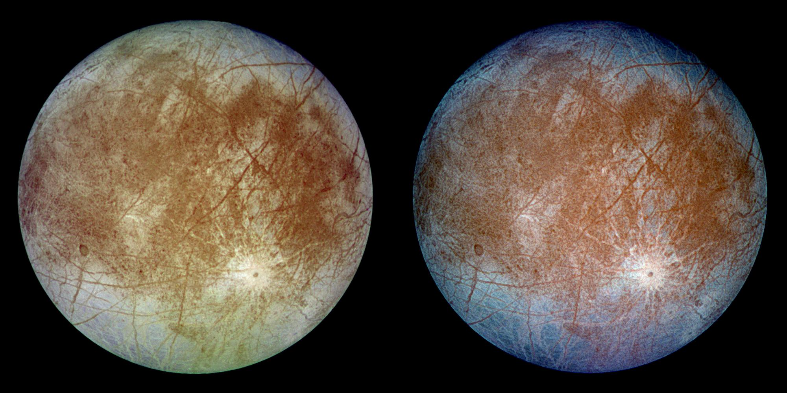
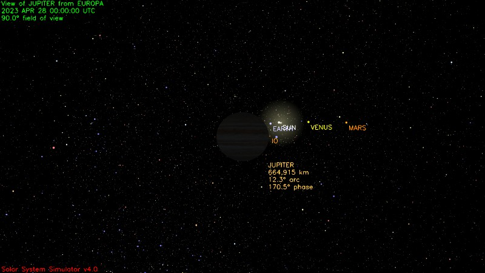
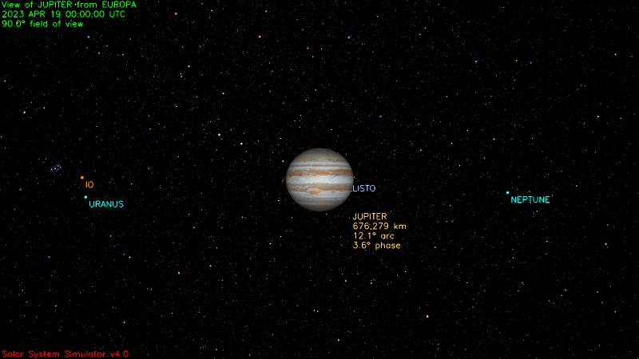
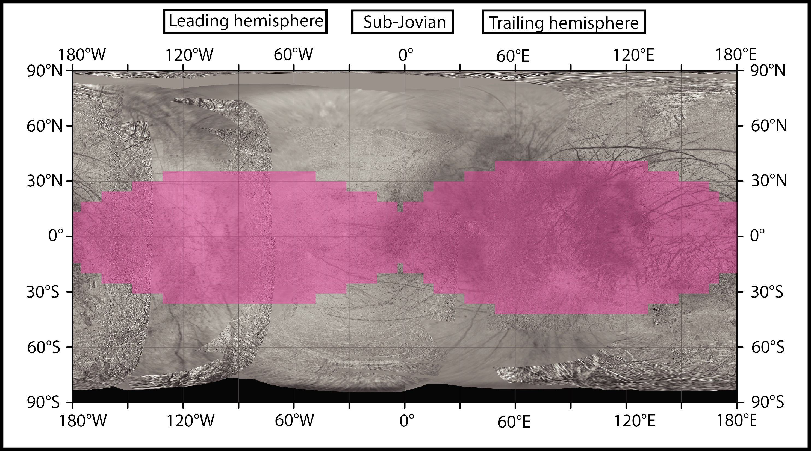
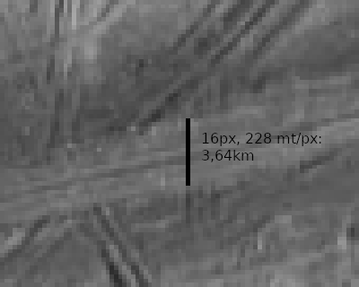
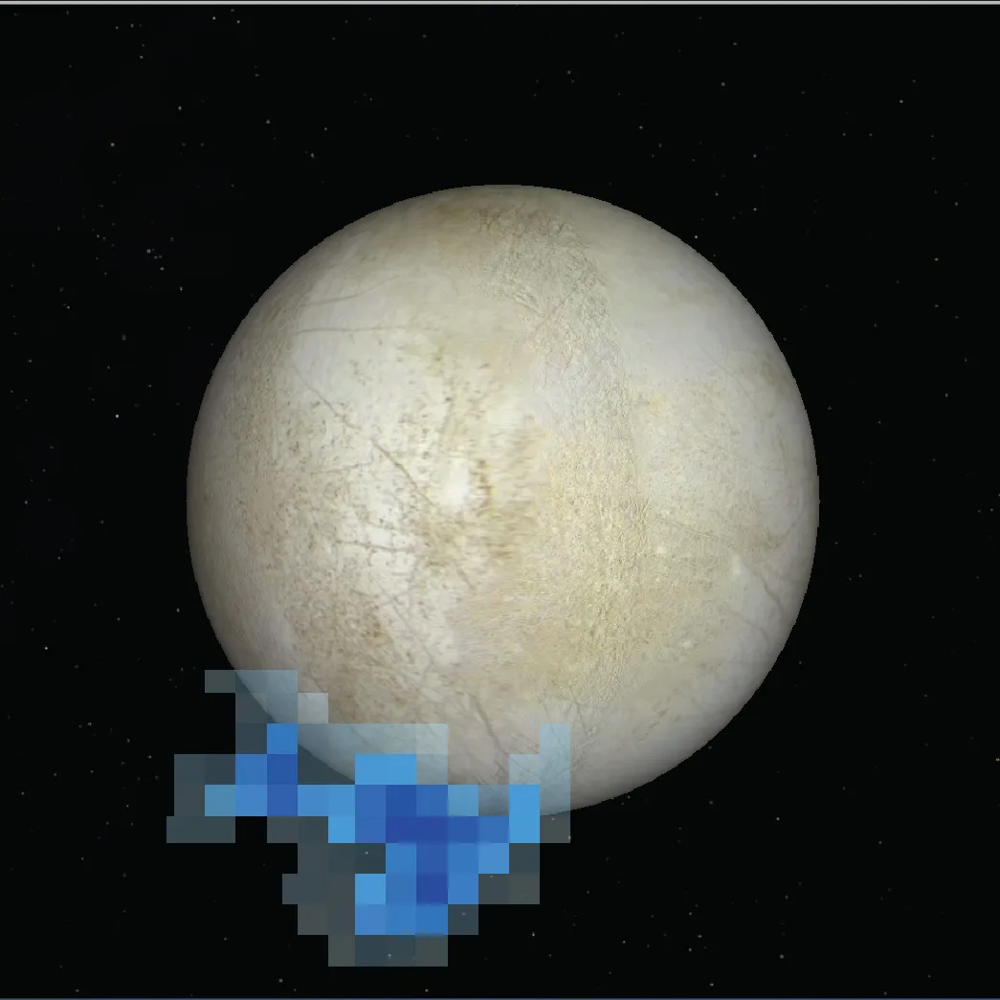

Europa
Wikipedia
https://en.wikipedia.org/wiki/Europa_(moon)
Maps
Europa has a geological map and defined quadrangles.
USGS Map

https://pubs.usgs.gov/imap/i2757/
NOTES ON BASE This sheet is one in a series of maps of the Galilean satellites of Jupiter at a nominal scale of 1:15,000,000. This series is based on data from the Galileo Orbiter Solid-State Imaging (SSI) camera and the Voyager 1 and 2 spacecraft.
PROJECTION Mercator and Polar Stereographic projections used for this map of Europa are based on a sphere having a radius of 1,562.09 km. The scale is 1:8,388,000 at ±56° latitude for both projections. Longitude increases to the west in accordance with the International Astronomical Union (1971; Davies and others, 1996). Latitude is planetographic.
CONTROL The process of creating a geometric control network began with selecting control points on the individual images, making pixel measurements of their locations, using reseau locations to correct for geometric distortions, and converting the measurements to millimeters in the focal plane. These data are combined with the camera focal lengths and navigation solutions as input to a photogrammetric triangulation solution (Davies and others, 1998; Davies and Katayama, 1981). The solution used here was computed at the RAND Corporation in June 2000. Solved parameters include the radius (given above) of the best-fitting sphere, the coordinates of the con- trol points, the three orientation angles of the camera at each exposure (right ascension, declination, and twist), and an angle (W0) that defines the orientation of Europa in space. W0—in this solution 36.022°—is the angle along the equator to the east, between the 0° meridian and the equator’s intersection with the celestial equator at the standard epoch J2000.0. This solution places the crater Cilix at its defined longitude of 182° west (Davies and others, 1996).
MAPPING TECHNIQUE This global map base uses the best image quality and moderate resolution coverage supplied by Galileo SSI and Voyager 1 and 2 (Batson, 1987; Becker and others, 1998; 1999; 2001). The digital map was produced using Integrated Software for Imagers and Spectrometers (ISIS) (Eliason, 1997; Gaddis and others, 1997; Torson and Becker, 1997). The individual images were radiometrically calibrated and photometrically normalized using a Lunar-Lambert function with empirically derived values (McEwen, 1991; Kirk and others, 2000). A linear correction based on the statistics of all overlapping areas was then applied to minimize image brightness varia- tions. The image data were selected on the basis of overall image quality, reasonable original input resolution (from 20 km/pixel for gap fill to as much as 40 m/pixel), and availability of moderate emission/incidence angles for topography and albedo. Although consistency was achieved where possible, different filters were included for global image coverage as necessary: clear/blue for Voyager 1 and 2; clear, near-IR (757 nm), and green (559 nm) for Galileo SSI. Individual images were projected to a Sinusoidal Equal-Area projection at an image resolution of 500 m/pixel. The final constructed Sinusoidal projection mosaic was then reprojected to the Mercator and Polar Stereographic projections included on this sheet.
NOMENCLATURE Names on this sheet are approved by the International Astronomical Union (IAU, 1980, 1986, 1999, and 2001). Names have been applied for features clearly visible at the scale of this map; for a complete list of nomenclature of Europa, please see http://planetarynames.wr.usgs.gov. Font color was chosen only for readability.
Quadrangles (Je):
Quadrangles as defined but unnamed: https://solarviews.com/eng/eurmap.htm

Other resources
https://www.researchgate.net/publication/234039235_Geologic_mapping_of_Europa
Sky
Europa is tidally locked with Jupiter, so Jupiter never moves in the sky and it's visible only on Europe's emisphere that faces it.
From Wikipedia https://en.wikipedia.org/wiki/Europa_(moon)#Orbit_and_rotation:
Europa orbits Jupiter in just over three and a half days, with an orbital radius of about 670,900 km. With an orbital eccentricity of only 0.009, the orbit itself is nearly circular, and the orbital inclination relative to Jupiter's equatorial plane is small, at 0.470°. Because of this, there is a sub-Jovian point on Europa's surface, from which Jupiter would appear to hang directly overhead. Europa's prime meridian (0 longitude) is a line passing through this point.
Remember also that:
Apparent size / 3438 arcminutes = Diameter (km) / Distance (km)
Considering this, the height of Jupiter in the sky is equivalent to the latitude-longitude coordinates of any given point, flipped. For example at 10°S 5°E, Jupiter appears in the sky close to the zenith, at 10°N 5°W. Past 90°E/W, Jupiter's center is below the horizon, but it's partially visible for a few more degrees (half of its apparent diameter).
Jupiter's apparent diameter is 13.4° wide when seen from Europa: Jupiter has a diameter of 142,000 km, Europa has a diameter of 2960 km, and distance varies between 604,000 and 592,000 km.
Leading/trailing hemisphere
The leading hemisphere is the one facing the direction of motion of the moon while orbiting Jupiter. The trailing hemisphere is its opposite. So the "subjovian" hemisphere overlaps for 90° with the western half of the trailing hemisphere and for 90° with the eastern half of the leading hemisphere.
Image of Europa's trailing emisphere. North up. https://photojournal.jpl.nasa.gov/catalog/PIA00502

This image shows two views of the trailing hemisphere of Jupiter's ice-covered satellite, Europa. The left image shows the approximate natural color appearance of Europa. The image on the right is a false-color composite version combining violet, green and infrared images to enhance color differences in the predominantly water-ice crust of Europa. Dark brown areas represent rocky material derived from the interior, implanted by impact, or from a combination of interior and exterior sources. Bright plains in the polar areas (top and bottom) are shown in tones of blue to distinguish possibly coarse-grained ice (dark blue) from fine-grained ice (light blue). Long, dark lines are fractures in the crust, some of which are more than 3,000 kilometers (1,850 miles) long. The bright feature containing a central dark spot in the lower third of the image is a young impact crater some 50 kilometers (31 miles) in diameter. This crater has been provisionally named "Pwyll" for the Celtic god of the underworld.
Europa is about 3,160 kilometers (1,950 miles) in diameter, or about the size of Earth's moon. This image was taken on September 7, 1996, at a range of 677,000 kilometers (417,900 miles) by the solid state imaging television camera onboard the Galileo spacecraft during its second orbit around Jupiter. The image was processed by Deutsche Forschungsanstalt fuer Luftund Raumfahrt e.V., Berlin, Germany.
Crater on the right is Pwyll, the one on the right Callanish, the spot right under the wide crossing lineae is Conamara Chaos.
Jupiter from various locations
-
Callanish Crater 16.70°S 25.5°E (Je-10 "Callanish", quadrangle name arbitrary). It's still fully in the trailing hemisphere and Jupiter is fully visible, high in the sky at slightly north-west. https://planetarynames.wr.usgs.gov/Feature/974
-
Conamara Chaos 9.70°N 87.3°E (Je-09 "Belus Linea", quadrangle name arbitrary). Jupiter is sitting slightly southward on the western horizon, half visible. https://en.wikipedia.org/wiki/Conamara_Chaos https://planetarynames.wr.usgs.gov/Feature/1282
-
Kennet Linea 41°S 48°E. Consider that, being a Linea, the center coordinates don't mean much. However, from the specified point, Jupiter is well visible and high in the sky, equally far between the zenith and the horizon in both directions. https://planetarynames.wr.usgs.gov/Feature/2988
Phases of Jupiter
Knowing that Europa it tidally locked, phases are opposite: at midday Jupiter is dark and a solar eclipse occurs, while at night Jupiter is full. The day/month on Europa lasts ~84h, so ~3.5 days.
- Nearly Midday: Aperture 90°. Generated with NASA's simulator https://space.jpl.nasa.gov/

- Nearly Midnight: Aperture 90°. Generated with NASA's simulator https://space.jpl.nasa.gov/

Surface
Radioactivity
From Wikipedia:
The ionizing radiation level at Europa's surface is equivalent to a daily dose of about 5.4 Sv (540 rem)["The New Solar System", 1999, see the books], an amount that would cause severe illness or death in human beings exposed for a single Earth day (24 hours).
Also this page for reference: https://web.archive.org/web/20080725050708/http://zimmer.csufresno.edu/~fringwal/w08a.jup.txt:
Satellites have spacings similar to Bode's Law: really miniature Solar Systems. All have fierce, vicious magnetospheres! Doses: Callisto: 0.01 rem/day, Ganymede: 8 rem/day, Europa: 540 rem/day, Io: 3600 rem/day, Thebe and inner satellites: 18,000 rem/day!
Another reference from the Europa Lander project: 2.0 Mrad radiation exposure https://web.archive.org/web/20190924151217/https://www.jpl.nasa.gov/missions/web/absscicon/02-AbsSciCon-Mission-Overview-13Jun2019-no-BU.pdf
Article: https://europa.nasa.gov/news/17/radiation-maps-of-europa-key-to-future-missions/

It seems like the equatorial zone is much more radioactive than the poles (pink zones).
Phosphorescence
Europa is phosphorescent because of its radioactivity: https://www.nasa.gov/feature/jpl/europa-glows-radiation-does-a-bright-number-on-jupiters-moon ( Backup)
As the icy, ocean-filled moon Europa orbits Jupiter, it withstands a relentless pummeling of radiation. Jupiter zaps Europa’s surface night and day with electrons and other particles, bathing it in high-energy radiation. But as these particles pound the moon’s surface, they may also be doing something otherworldly: making Europa glow in the dark.
New research from scientists at NASA’s Jet Propulsion Laboratory in Southern California details for the first time what the glow would look like, and what it could reveal about the composition of ice on Europa’s surface. Different salty compounds react differently to the radiation and emit their own unique glimmer. To the naked eye, this glow would look sometimes slightly green, sometimes slightly blue or white and with varying degrees of brightness, depending on what material it is.
Scientists use a spectrometer to separate the light into wavelengths and connect the distinct “signatures,” or spectra, to different compositions of ice. Most observations using a spectrometer on a moon like Europa are taken using reflected sunlight on the moon’s dayside, but these new results illuminate what Europa would look like in the dark. [...]
Scientists have inferred from prior observations that Europa’s surface could be made of a mix of ice and commonly known salts on Earth, such as magnesium sulfate (Epsom salt) and sodium chloride (table salt). The new research shows that incorporating those salts into water ice under Europa-like conditions and blasting it with radiation produces a glow.
That much was not a surprise. It’s easy to imagine an irradiated surface glowing. [...] “But we never imagined that we would see what we ended up seeing,” said JPL’s Bryana Henderson, who co-authored the research. “When we tried new ice compositions, the glow looked different. And we all just stared at it for a while and then said, ‘This is new, right? This is definitely a different glow?’ So we pointed a spectrometer at it, and each type of ice had a different spectrum.”
Note that at the time of the article (2020), no mission observed this glow yet. It's a lab prediction.
Penitentes
Context: https://en.wikipedia.org/wiki/Penitente_(snow_formation)

Penitentes, or nieves penitentes (Spanish for "penitent snows"), are snow formations found at high altitudes. They take the form of elongated, thin blades of hardened snow or ice, closely spaced and pointing towards the general direction of the sun. [...]
These spires of snow and ice grow over all glaciated and snow-covered areas in the Dry Andes above 4,000 metres (13,000 ft). They range in length from a few centimetres to over 5 metres (16 ft) [on Earth]. [...]
Penitentes up to 15 metres (49 ft) high are suggested to be present in the tropics zone on Europa, a satellite of Jupiter.
Article: https://www.space.com/42051-jupiter-moon-europa-ice-towers-lander.html ( Backup)
Equatorial regions of the potentially life-supporting Europa, which harbors a huge ocean of salty liquid water beneath its icy shell, are probably studded with blades of ice up to 50 feet (15 meters) tall, a new study suggests. [...] "Clearly, the paper suggests very strongly that the tropics of Europa are going to be spiky, and it would be unwise to plan to land there without a specially adapted lander," study lead author Dan Hobley, a lecturer in the School of Earth and Ocean Sciences at Cardiff University in Wales, told Space.com via email. "It would probably be safer to land further away from the equator!"
There's no reason to believe this process is restricted to our planet. Indeed, scientists think the "bladed terrain" spotted on Pluto by NASA's New Horizons spacecraft likely consists of penitentes carved into methane ice.
Europa would seem to a good bet for penitente gardens as well; after all, it's a cold, dry, virtually air-free world that's entirely covered in ice. So Hobley and his colleagues calculated sublimation rates around the surface of the Jupiter moon and then compared those with the rates of other erosional processes. Those processes include bombardment by meteoroids and charged particles from Jupiter's powerful radiation belts.
The researchers found sublimation to be the dominant factor on equatorial Europa, the regions within 23 degrees of the moon's equator. And sublimation has likely carved penitentes into the ice there, the study team determined. These are some serious putative penitentes, too: some fields could feature towers up to 50 feet (15 m) tall, spaced about 23 feet (7 m) apart, the scientists found. Here on Earth, penitente heights typically range from 3 to 16 feet (1 to 5 m).
Original article: s41561-018-0235-0
Note that at the time of the article (2018), no mission observed penitentes on Europa yet. It's a prediction.
Lineae
Lineae are relatively thin. From available pictures they seem to be about 2km wide, the equivalent of 30min walking or 10-15mins running.
Note: this is not the time it would take to cross the same distance on Europa. The terrain is likely really harsh (see Penitentes) and there are slopes. On top of it the gravity is moon-like, which severely affects balance even in normal conditions, and the ground is made of salty ice, which makes is very slippery. The most likely "quick" method of moving on the surface is some sort of "skating" where flat, and honestly I have no idea what in the case of blades. Probably one would need to jump over them. At that gravity, jumping is slow and best done horizontally. Etc etc. I should summarize the difficulties of moving in a low gravity, ragged icy surface in another page.
Example: 15ESREGMAP01 (Galileo mosaic from https://www.planetary.org/space-images/lineae-on-europa, original source likely here but dead). Shows Minos Linea https://planetarynames.wr.usgs.gov/Feature/3915 and Udaeus Linea https://planetarynames.wr.usgs.gov/Feature/6183.

Lineae and lenticulae on Europa. This mosaic of Galileo SSI images from 1998 and 1999 runs from Mehen Linea at the top of the frame, across the intersection of Minos and Udaeus Lineae, and finally to the lenticulated terrain northwest of Dyfed Regio. The resolution of this mosaic is 228 meters per pixel. (NASA / JPL / Jason Perry)
The lineae thickness is about 16-20px overall, which sums up to 4km wide in the widest possible point I could find. Consider also that these are among the widest lineae I could locate on the map. Kennet, for comparison, is thinner.

Geysers
Article: https://www.nasa.gov/content/goddard/hubble-europa-water-vapor ( Backup )

Previous scientific findings from other sources already point to the existence of an ocean located under Europa's icy crust. Researchers are not yet fully certain whether the detected water vapor is generated by erupting water plumes on the surface, but they are confident this is the most likely explanation. [...]
Hubble spectroscopic observations provided the evidence for Europa plumes in December 2012. Time sampling of Europa's auroral emissions measured by Hubble's imaging spectrograph enabled the researchers to distinguish between features created by charged particles from Jupiter's magnetic bubble and plumes from Europa's surface, and also to rule out more exotic explanations such as serendipitously observing a rare meteorite impact.
The imaging spectrograph detected faint ultraviolet light from an aurora, powered by Jupiter’s intense magnetic field, near the moon’s south pole. Excited atomic oxygen and hydrogen produce a variable auroral glow and leave a telltale sign that are the products of water molecules being broken apart by electrons along magnetic field lines.
“We pushed Hubble to its limits to see this very faint emission. These could be stealth plumes, because they might be tenuous and difficult to observe in the visible light,” said Joachim Saur of the University of Cologne, Germany. Saur, who is principal investigator of the Hubble observation campaign, co-wrote the paper with Roth. He suggested that long cracks on Europa’s surface, known as lineae, might be venting water vapor into space. Cassini has seen similar fissures that host the Enceladus jets.
Also the Hubble team found that the intensity of the Europa plumes, like those at Enceladus, varies with Europa’s orbital position. Active jets have only been seen when the moon is farthest from Jupiter. The researchers could not detect any sign of venting when Europa is closer to Jupiter.
One explanation for the variability is that these lineae experience more stress as gravitational tidal forces push and pull on the moon and open vents at larger distances from Jupiter. The vents are narrowed or closed when the moon is closest to the gas-giant planet. "The apparent plume variability supports a key prediction that Europa should tidally flex by a significant amount if it has a subsurface ocean," said Kurt Retherford, also of Southwest Research Institute.
The Europa and Enceladus plumes have remarkably similar abundances of water vapor. Because Europa has a roughly 12 times stronger gravitational pull than Enceladus, the minus-40-degree-Fahrenheit (minus-40-degree-Celsius) vapor for the most part doesn’t escape into space as it does at Enceladus, but rather falls back onto the surface after reaching an altitude of 125 miles (201 kilometers), according to the Hubble measurements. This could leave bright surface features near the moon’s south polar region, the researchers hypothesize.
Note also here that at the time of the article (2013), this is a prediction based on Hubble observations and parallels with Enceladus. Direct observations on Europa are still weak.
According to Wikipedia new studies based on the same data seems to confirm the same.